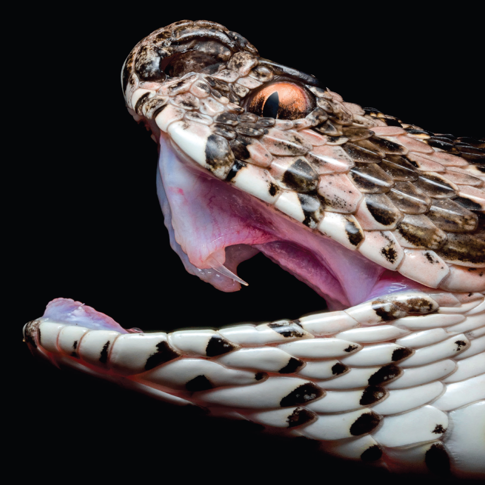

.jpg)


.jpg)
งูแมวเซา (Russell's Viper)
ชื่อวิทยาศาสตร์: Daboia siamensis
ลักษณะทั่วไป
ลำตัวมีความอ้วนสั้นและหนาแน่น บริเวณกลางลำตัวจะโป่งขยายกว้างที่สุด แล้วค่อยๆ เรียวเล็กลงไปทางส่วนท้าย ความยาวตัวเต็มวัยโดยเฉลี่ยจะอยู่ที่ประมาณ 90 ถึง 120 เซนติเมตร แต่อาจพบตัวที่มีขนาดใหญ่เป็นพิเศษยาวได้ถึง 150 เซนติเมตร เกล็ดลำตัวมีลักษณะขรุขระ เนื่องจากมีสันแข็ง (Keel) พาดผ่านกลางแผ่นเกล็ดทุกแผ่นอย่างเด่นชัด เมื่อสัมผัสจะรู้สึกหยาบ ไม่ลื่นมือเหมือนงูชนิดอื่น สันเกล็ดนี้ยังช่วยลดการสะท้อนของแสง ทำให้ลำตัวดูด้านและกลมกลืนกับสภาพแวดล้อมได้ดียิ่งขึ้น หางมีขนาดสั้นมากเมื่อเทียบกับความยาวลำตัวทั้งหมด โดยส่วนหางจะกุดเรียวลงอย่างรวดเร็วต่อจากส่วนก้น ดวงตามีขนาดปานกลางและโปนออกมาเล็กน้อย มีโหนกคิ้วยื่นออกมาปกคลุมเหนือดวงตา ทำให้ดูมีดวงตาที่ดุร้าย รูม่านตา (Pupil) มีลักษณะเป็นแนวตั้งในแนวดิ่ง (Vertical Slit) คล้ายกับดวงตาของแมว อันเป็นที่มาของชื่อ "งูแมวเซา" ในภาษาไทย ซึ่งลักษณะรูม่านตาแบบนี้ช่วยให้มองเห็นและล่าเหยื่อในมืดหรือเวลากลางคืนได้อย่างมีประสิทธิภาพ ส่วนหัวของงูแมวเซามีรูปทรงเป็นสามเหลี่ยมอย่างเด่นชัด (Distinctly Triangular) โดยฐานของหัวบริเวณขากรรไกรจะขยายกว้างออกอย่างเห็นได้ชัด เนื่องจากเป็นตำแหน่งที่ตั้งของกระเปาะน้ำพิษ (Venom Gland) ขนาดใหญ่ทั้งสองข้าง แล้วค่อยๆ บีบแคบลงไปทางส่วนปลายเรียวของจมูก มีคอที่กิ่วและเล็กมากเมื่อเทียบกับความกว้างของส่วนหัว ทำให้แนวแยกระหว่างหัวและลำตัวแบ่งออกจากกันอย่างเด่นชัด สีพื้นหลักของลำตัวมีหลากหลายเฉด ตั้งแต่สีน้ำตาลน้ำผึ้ง สีน้ำตาลเหลือง สีน้ำตาลเทา ไปจนถึงสีน้ำตาลเข้มปนแดง ซึ่งเป็นโทนสีที่กลมกลืนกับเศษใบไม้แห้ง กิ่งไม้ ก้อนหิน และดินแห้ง จุดเด่นที่สุดคือลายแต้มรูปวงกลมหรือรูปไข่ (Oval) สีน้ำตาลเข้มถึงสีดำ เรียงตัวกันอย่างเป็นระเบียบตามยาวตลอดแนวลำตัวจำนวน 3 แถบ คือ แถบกลางหลัง 1 แถบ และแถบข้างลำตัวอีกข้างละ 1 แถบ ลายแต้มวงกลมแต่ละวงจะมีขอบด้านนอกสีดำสนิท และล้อมรอบชั้นนอกสุดด้วยขอบสีขาวหรือสีครีมสว่าง ทำให้ลายแต้มดูโดดเด่นสะดุดตาแต่ในขณะเดียวกันก็ช่วยทลายเส้นขอบเรือนร่าง (Disruptive Coloration) เมื่อหลบซ่อนอยู่ในพงหญ้า ทำให้สายตาของมนุษย์และสัตว์อื่นมองเห็นเป็นเพียงแสงและเงาของใบไม้ บริเวณท้องมีสีขาว สีครีม หรือสีเหลืองอ่อน โดยมีจุดแต้มสีน้ำตาลเข้มหรือสีดำเล็กๆ กระจายอยู่ประปรายตามขอบของเกล็ดใต้ท้อง งูแมวเซามีระบบเขี้ยวพิษที่พัฒนาไปถึงขั้นสูงสุดในบรรดางูทั้งหมด เขี้ยวพิษของมันมีลักษณะเป็นท่อโพรงเหมือนเข็มฉีดยา มีความยาวและโค้งงอ โดยเชื่อมต่อกับกระดูกขากรรไกรที่เคลื่อนที่ได้ ในเวลาปกติที่ฉากขากรรไกรปิดอยู่ เขี้ยวพิษที่มีความยาวมากนี้จะพับแนบไปกับเพดานปากด้านบนโดยมีเยื่อหุ้มไว้ แต่เมื่อทำการอ้าปากเพื่อจะฉกกัด กระดูกขากรรไกรจะหมุนยื่นออกไปด้านหน้า ทำให้เขี้ยวพิษกางตั้งฉากขึ้นมาพร้อมที่จะเจาะเข้าเนื้อของเหยื่อและฉีดน้ำพิษลงไปในระดับลึกได้อย่างแม่นยำ งูแมวเซาจัดเป็น สัตว์กินเนื้อ (Carnivore) ที่มีความสำคัญในระบบนิเวศ โดยเฉพาะการควบคุมประชากรของสัตว์ฟันแทะในพื้นที่เกษตรกรรม หนูพุกและหนูนา (Rodents) เป็นอาหารโปรดและอาหารหลักของงูแมวเซาตัวเต็มวัย ด้วยเหตุนี้จึงพบงูแมวเซาอาศัยอยู่ตามทุ่งนา ไร่อ้อย หรือพื้นที่เกษตรกรรมที่มีหนูชุกชุม ในงูแมวเซาวัยอ่อน (ลูกงู) มักเลือกกินจิ้งจก กิ้งก่า หรือเขียดขนาดเล็ก เนื่องจากขนาดปากและพิษยังไม่โตพอที่จะจับหนูขนาดใหญ่ได้ งูแมวเซาไม่ใช่สายพันธุ์ที่เลื้อยออกตามล่าเหยื่ออย่างแอคทีฟ แต่มักใช้วิธี "ดักซุ่มรอ" โดยจะขดตัวพรางตัวอย่างมิดชิดตามดงหญ้า กองไม้ หรือคันนาใกล้กับทางเดินของหนู เมื่อเหยื่อเดินเข้ามาในระยะฉก มันจะพุ่งตัวออกไปด้วยความเร็วสูง เขี้ยวพับขนาดใหญ่จะฝังลงในตัวเหยื่อพร้อมปล่อยน้ำพิษเข้มข้น หลังจากฉกแล้ว งูแมวเซามักจะปล่อยเหยื่อทันที เพื่อป้องกันไม่ให้เหยื่อที่ดิ้นรนหันกลับมาทำร้าย จากนั้นจะใช้อวัยวะรับสัมผัสสารเคมี (Jacobson's organ) และลิ้นสองแฉกในการเลียรอยกลิ่นติดตามไปกินเหยื่อที่สิ้นใจในระยะใกล้ๆ เมื่อรู้สึกถึงภัยคุกคาม งูแมวเซาจะสูดลมหายใจเข้าสู่ปอดขนาดใหญ่ของมันจนลำตัวพองขยายขึ้น จากนั้นจะทำการปลดปล่อยลมออกมาผ่านทางรูจมูกอย่างแรงและต่อเนื่อง เกิดเป็นเสียงขู่ดันหูที่ดังคล้ายกับ "ลมยางรถรั่ว" หรือ "น้ำเดือด" เสียงนี้สามารถได้ยินได้ไกลหลายเมตร เพื่อเตือนไม่ให้ผู้รบกวนเข้าใกล้ แม้ตัวจะดูอ้วนสั้นและยืดอาด แต่ในท่าเตรียมพร้อม มันสามารถขดลำตัวเป็นสปริงวงกลม ยืดส่วนหัวขึ้นเหนือพื้น และสามารถพุ่งตัวออกไปฉกกัดเหยื่อได้ด้วยความเร็วสูงมากในระยะครึ่งหนึ่งของความยาวลำตัว และสามารถฉกกัดได้ในทุกทิศทางอย่างแม่นยำ
ถิ่นอาศัย พิษ และความอันตราย
- ถิ่นอาศัย: งูแมวเซาสายพันธุ์ตะวันออก (Daboia siamensis) พบกระจายพันธุ์ใน เมียนมา, กัมพูชา, ตอนใต้ของจีน (มณฑลกวางตุ้ง, กว่างซี), ไต้หวัน รวมถึงบางเกาะในประเทศอินโดนีเซีย (เช่น เกาะจาวาตะวันออก, ฟลอเรส, โกโมโด) ในประเทศไทยจะพบมากในแถบภาคกลาง พบได้บางพื้นที่ในภาคอีสานและภาคใต้ ในภาคเหนือตอนบนหรือภาคใต้ตอนล่างมากๆ จะพบได้น้อยหรือแทบไม่พบเลย งูแมวเซามีนิสัยไม่ชอบอยู่บนต้นไม้หรือในน้ำ แต่จะอาศัยอยู่บนพื้นดินเป็นหลัก สภาพแวดล้อมที่มักพบงูแมวเซา ได้แก่ พื้นที่เกษตรกรรมและนาข้าว ที่ราบแห้ง ดินปนทราย และที่ดอนเชิงเขา และพื้นที่ใกล้ชุมชน มักซ่อนตัวอยู่ใต้กองเศษไม้ กองฟาง กอหญ้าหนาๆ โพรงดิน ซอกหิน หรือซอกร่องสวน หากบริเวณรอบบ้านพักอาศัยหรือยุ้งเก็บพืชผลมีเศษขยะ กองวัสดุเก่า หรือมีหนูอาศัยอยู่ งูแมวเซาก็มักจะเข้ามาอาศัยใกล้ๆมนุษย์เพื่อหากิน
- พิษ:พิษของงูแมวเซาจัดเป็นพิษที่มีความรุนแรงและซับซ้อนสูง โดยรวมคุณสมบัติของ พิษต่อระบบเลือด (Hemotoxic), พิษต่อไต (Nephrotoxic) และ พิษต่อผนังหลอดเลือด (Vaskulotoxic) ไว้ด้วยกัน ส่งผลกระทบทั้งแบบเฉพาะที่และทั่วร่างกายอย่างรวดเร็ว น้ำพิษมีเอนไซม์ที่เข้าไปกระตุ้นปัจจัยการแข็งตัวของเลือด (Prothrombin และ Factor X) อย่างรุนแรง ทำให้เกิดลิ่มเลือดเล็กๆ กระจายไปทั่วร่างกายอย่างรวดเร็ว ส่งผลให้ปัจจัยการแข็งตัวของเลือดและเกล็ดเลือดถูกใช้จนหมดสิ้น (Disseminated Intravascular Coagulation: DIC) หลังจากนั้น เลือดจะไม่สามารถแข็งตัวได้อีกเลย เกิดภาวะเลือดออกไม่หยุดตามอวัยวะต่างๆ พิษมีสารพิษต่อไต (Nephrotoxin) ร่วมกับการที่ลิ่มเลือดขนาดเล็กไปอุดตันหลอดเลือดฝอยในไต และภาวะความดันโลหิตตกจากการเสียเลือด ทำให้เกิดภาวะ ไตวายเฉียบพลัน (Acute Renal Failure) ได้รวดเร็วกว่างูพิษชนิดอื่น ทำลายผนังหลอดเลือดฝอย ทำให้พลาสม่าและเลือดรั่วไหลออกนอกหลอดเลือด เกิดการบวมน้ำอย่างหนักและเนื้อเยื่อตาย เมื่อถูกกัดจะมีอาการเลือดไหลไม่หยุดจากรอยเขี้ยวที่ถูกกัด เลือดออกตามซอกเหงือก, เลือดกำเดาไหล, ตาขาวมีเลือดออก ปัสสาวะเป็นเลือด (Hematuria) หรือปัสสาวะมีสีดำ/สีชา อาเจียนเป็นเลือด หรือถ่ายอุจจาระเป็นเลือดสด/ดำ มีรอยจ้ำเลือด (Ecchymosis) หรือจุดเลือดออกตามผิวหนังทั่วร่างกาย ตามมาด้วยภาวะไตวายเฉียบพลัน ได้แก่ ปัสสาวะออกน้อยลงเรื่อยๆ จนกระทั่งปัสสาวะไม่ออกเลย (Anuria) มีอาการบวมตามตัว หน้าบวม คลื่นไส้ อาเจียน และง่วงซึมจากสารพิษตกค้างในร่างกาย ความดันโลหิตลดต่ำลงอย่างรวดเร็ว เหงื่อออก ตัวเย็น ตัวซีด และอาจหมดสติจนเสียชีวิตได้หากไม่ได้รับเซรุ่มต้านพิษทันท่วงที
- ระดับความอันตราย: โคตรอันตราย ☠☠☠☠☠: พบได้บ่อยถึงปานกลางในพื้นที่ภาคกลางและภาคตะวันออกของไทย โดยเฉพาะตามท้องนา ไร่อ้อย กองฟาง และพงหญ้าแห้งใกล้ยุ้งข้าวหรือบ้านเรือน จุดที่น่ากลัวที่สุดคือ พฤติกรรมไม่ยอมเลื้อยหนี มันเชื่อมั่นในลายพรางของตัวเองสูงมากและจะนอนขดนิ่งแม้คนจะเดินมาใกล้ ทำให้เกษตรกรหรือชาวบ้านเหยียบใส่โดยไม่ตั้งใจจนถูกกัดได้ง่ายมาก แม้ดูเชื่องช้าในภาวะปกติ แต่เมื่อถูกรบกวนในระยะประชิด มันจะขดตัวเป็นสปริง สูบลมเข้าปอดแล้วขู่เสียงดังคล้ายลมยางรั่ว "ฟู่...ฟู่" อย่างน่ากลัว และ สามารถพุ่งฉกได้เร็วมากในทุกทิศทาง โดยมีรัศมีฉกไกลถึงครึ่งหนึ่งของความยาวลำตัว เป็นหนึ่งในงูที่มีพิษรุนแรงและซับซ้อนที่สุดในเอเชีย เขี้ยวพิษยาว พับได้ และฉีดน้ำพิษได้ปริมาณมาก พิษทำลายระบบเลือดทำให้เลือดไม่แข็งตัว มีเลือดออกไม่หยุดตามอวัยวะภายใน รูแผล และเหงือก รวมถึง ทำลายไตโดยตรงจนเกิดภาวะไตวายเฉียบพลัน ซึ่งเป็นสาเหตุหลักของการเสียชีวิตหากไม่ได้รับเซรุ่มต้านพิษทันท่วงที
Fun Fact
- ที่มาของชื่อ "Russell's Viper": ชื่อภาษาอังกฤษตั้งขึ้นเพื่อเป็นเกียรติแก่ Patrick Russell นักธรรมชาติวิทยาชาวสก็อตแลนด์ ซึ่งเป็นผู้แรกๆ ที่ทำการศึกษาและอนุกรมวิธานงูพิษในอินเดียอย่างเป็นระบบในช่วงปลายศตวรรษที่ 18
- คู่ปรับตัวฉกาจของเกษตรกร แต่ช่วยคุมประชากรหนู: ในมุมของระบบนิเวศ งูแมวเซาเป็น "นักล่าหนู" มืออาชีพ การที่มันชอบอาศัยอยู่ใกล้ทุ่งนาและยุ้งข้าวเพราะเป็นแหล่งรวมของหนูพุกและหนูนา การมีอยู่ของมันจึงช่วยควบคุมไม่ให้ประชากรหนูทำลายพืชผลทางการเกษตร
- เสียงขู่ดังที่สุดในบรรดางูไทย: เมื่องูแมวเซารู้สึกถูกคุกคาม มันจะสูบลมเข้าปอดจนตัวพอง แล้วปลดปล่อยลมออกมาทางรูจมูกเกิดเป็นเสียงขู่ "ฟู่...ฟู่" ที่ดังและทรงพลังมาก เสียงนี้ดังคล้ายลมยางรถรั่วหรือน้ำหม้อก๋วยเตี๋ยวเดือดปุดๆ ซึ่งเป็นเสียงขู่ที่ดังที่สุดในบรรดางูพิษทั้งหมดในประเทศไทย